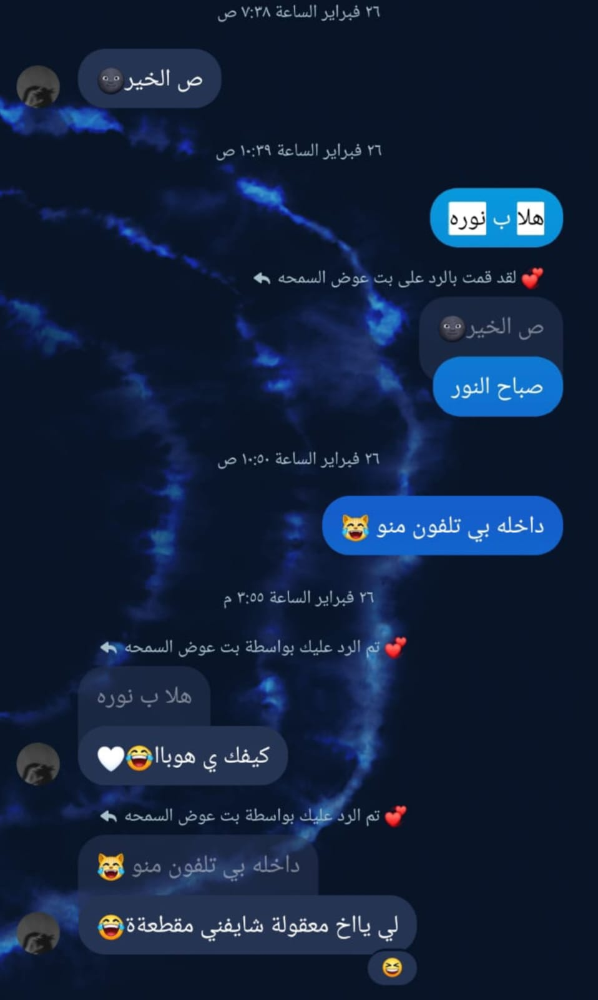

السلام عليكم ورحمة الله وبركاته
الليله عايز احكي عن حبيبة قلبي و قصتنا من البداية للنهاية
اليوم عيد ميلاد أم أولادي اللي بحبها (أم نور وزيودي)
أول يوم بيننا بدأ بي جملة (ص الخير)، ومن اليوم داك اتعلقنا مع بعض في شي سبحان الله جذبنا لبعضنا وقلوبنا بقت مربوطة مع بعضها البعض، ومن اليوم داك حبيتك ومت فيك حب وعشقتك يا عشيقتي ومعشوقتي اللي بعشقها.
الليلة أعرفكم عن بدايتنا وإلى الآن نحن كيف ومالينا نهاية إن شاء الله إلا يفرقنا الموت.
لما بدينا نتكلم مع بعض كان في حواجز، لأنو كنا مجرد أصحاب مبتدئين في علاقة الصداقة جديدين، فأكيد بيناتنا في حدود وحواجز، وأنا من أول يوم شفتها في حياتي حبيتها، بس ما حلو أقول ليها كدا طوالي لأنو ما كنت بعرفها وهي ما كانت بتعرفني.
أول نقطة عملتها عشان أحافظ على نورة هي كانت مهمة صعبة بالنسبة لي اليوم داك، اللي هي أنو أكلم إخوانها أنو أنا بتكلم مع نورة، وكلمتهم بكل الحصل عشان هم ما أصحابي بس هم بالنسبة لي إخواني، وأنا ما عايز أخسر نورة وأخسر إخوانها اللي هم إخواني قبل ما يكونوا أصحابي.
لما كلمتهم بكل التفاصيل والحصل قالوا لي هي زي أختك، وأدوني الصلاحية أنو أتكلم معاها بأريحية وأنا مطمن وهي كمان مطمنة. الخطوة العملتها دي كفيلة أنو تبسطني وتبسطها وخلتنا مطمنين جداً لبعض وما خايفين من زول أبداً.
واصلنا كدا في علاقتنا دي وكل يوم بنتعمق أكتر وأكتر، وحسيت أنو قلبي مايل عليها وقلبها مايل علي، ونحن عايزين بعض، فبقيت بلمح ليها وبقول ليها بريدك، وحتى كنت بهظر معاها لما أحس روحي ببالغ بالكلمة القلتها ليها دي، قلت ليك بريدك الالكتروني 😂، المهم وبعد داك شوية شوية بقينا نلمح لبعض ونحن لمن اعترفنا لبعض وقلناها بكل صدق وأريحية.
طبعاً الأيام ديك كنا بنقرا في الثانوي وبالأخص سنة (ثالث ثانوي)، واصلنا كدا وكل يوم نحن بنغرق في حب بعض وكل يوم نحن بنعشق بعض وكل يوم نحن بندمن في بعض بدون ما نحس.
وسبحان الله حتى في بداية علاقتنا كنا متفاهمين وماشين بأفكار بعض، لأنو فعلاً بنحب بعض جداً جداً وبلا شك.
اللي داير أقولو بمناسبة أنو نحن متفقين وبناخد رأي بعض، أنو نحن اخترنا نفس التخصص ونفس الجامعة عشان نكون مع بعض وفي عيون بعض وعشان نحن أصلاً دايرين بعض.
ويا سلام لمن أول يوم جينا الجامعة، لمن مصعب أخوها اتصل علي وقال لي نورة دي جاياك وداخلة على الجامعة، حسيت بفرحة كبيرة كأنو أنتي أمانة عندي وسلموني ليك وأنا مبسوط شديد اليوم داك، نحن أول يوم مع بعض ونقعد مع بعض ونتونس عادي، يا سلام أول يوم دا ما بتنسى نهائي طبعاً.
وبأمانة وصراحة الجامعة دي خلتنا قريبين لبعض أكتر وجمعتنا مع بعض، وكمان خلتنا نغرق في بعض أكتر وأكتر وأكتررر وأكتررر.
حبيتك يا نورة وما شايف غيرك أبداً والله، تصدقي أو لا تصدقي بحبك حب شديد وجداً جداً.
نرجع لقصتنا أنا وأم أولادي، معليش طلعت من القصة 😂، بعتذر.
واصلنا مع بعض سمستر 1 وسمستر 2 في الجامعة، وكنا عايزين نمتحن السمستر الثاني اللي هو امتحان الفاينل، بس للأسف الحرب قامت وجات قوات الدعم السريع ودخلت مدني والناس نزحت ومدني قفلت وكل شي فيها أغلق نهائي.
أنا وأسرتي طلعنا على مدينة سنار ونورة كانت موجودة في مدني، وكان قلبي عليها وقلبي معاها والله، وكان قلبي ليها كقلب أم لبتها والله.
وبعد فترة نحن مشينا مدينة كسلا واستقرينا هناك، والإنترنت فجأة يوم من الأيام قطع من كل السودان، وبعد أسبوعين رجع ولكن في مدني للأسف ما رجع ومدني فيها نورة وأسرتها طبعاً.
سبحان الله قبل ما يقطع الإنترنت كنا متناقشين وزعلانين من بعض وقبلها بيوم قبل الإنترنت ما يقطع اتصالحنا، وسبحان الله تاني يوم الإنترنت قطع من مدني.
من اليوم داك أنا ما على طبعي وما كنت أنا أبداً وحالتي اتدهورت بسبب الهموم وخوفي عليها، وإلى الآن أنا بخاف عليها من كل شي وبغير عليها من أقل شي، ممكن خوفي عليها الكتير دا وغيرتي عليها الكتيرة دي تضايقها شوية بس أنا طبعي كدا، هي نوراتي هي حبيبتي هي قلبي هي حياتي هي أم أولادي، كيف ما أخاف عليها؟
وسبحان الله من التفكير الكتير بقيت بحلم بيك لي أيام طويلة، ومرة حلمت أنو دخلتي وسلمت عليك والحلم كان ملخبط شديد بس فرحتي كانت ما بتتوصف أبداً والله أثناء الحلم، ولمن صحيت كنت تعبان شديد ومتضايق جداً، حتى بعدها قمت رسلت في رقم مصعب ورسلت في رقم رنا قلت يمكن تلفون زول منهم يدخل ويطمني شوية.
يعني تخيلي معاي شهرين أنا مهموم وتعبان وتفكيري كلو فيك وعليك.
ويوم دخل مصعب أخوك وقال لي كلم أبويا اتصل عليهو وقول ليهو ناس البيت ديل عايزين يطلعوا من مدني وعايزنك ترسل ليهم قروش في رقم حساب خالكم بكري، انبسطت وقلت ليهو أبشر طوالي بكلمو ليك أبشر ما طلبت شي، وأنتي عارفة أنو كان همي كلو فيك؟ لأنو اشتقت ليك جداً جداً جداً جداً جداً جداً إلى ما لا نهاية والله.
وطبعاً لمن رسل لي مصعب أنو أكلم أبوك أنا يادوب وصلت هنا السعودية وكان نفسي أكون في كسلا واستقبل مرتي 😔 بس حصل خير وقدر الله ماشاء فعل.
نجي لي موضوع وصولهم لي مدينة كسلا. طبعاً دي براها كانت سلامة كبيرة وفرحة كبيرة جداً جداً جداً والله، تعبوا كلهم والناس تعبت كلها في الحرب والنزوح دا وأنا كل همي نورة كل تفكيري نورة، زي ما بقولو كل زول في همو وأنا كل همي كنتي أنتي.
صاح لمن الواحد يدخل بلد تانية بنبسط وبفرح؟ أنا والله لمن وصلت كانت بطني طامة ووالله تفكيري كلو فيك😔 بس الحمد لله.
ما حسيت بطعم حياتي إلا لمن جيتيني حسيت أنو الروح ارتدت فيني من أول وجديد.
صاح نحن بنعمل مشاغب وبنزعل من بعض وبنقل أدبنا وكل شي بس نحن ما بنقدر نستغنى عن بعض ولا أنا بقدر أبعد منك كتير وأنا بخاف عليك شديد وبغير عليك شديد والله.
ربنا يحفظك لي ويسعدك ويجمعنا بالحلال المبارك إن شاء الله يا قلبي.
وإلى الآن نحن مع بعض وماسكين يدين بعض، وإن شاء الله لآخر نفس حأكون جنبها وسندها وأبو عيالها وما أحوجها لي شي أبداً تحت خدمتك وطاعتك، لأنك إنسانة بتستاهلي كل الحب والله.
بكتفي بيها هي ست البنات وسيدها ومالي عينها وأنا ما داير شي غير أشوفها مبسوطة وأسعدها وما أخلي في بالها حاجة إلا تكون عندها إن شاء الله، وهي أمانة سلموني ليها وفي رقبتي وأنا بحبها جداً جداً.
وعمرها المشاكل والنقاشات اللي بيناتنا ما حتأثر في علاقتنا بالعكس حتقويها وحتخليها مترابطة أكتر، لأنو بنعرف شنو اللي بزعل الطرف الثاني وشنو اللي بحبو الطرف الثاني وشنو المفروض نتجاوزو ونتفاداهو عشان نجعل علاقتنا مستمرة وبدون زعل أو ضيق بيناتنا.
يا نوارتي انتي ❤ ، أنا بحبك جداً جداً جداً
👇 أول يوم لينا
❤ و برجع بقول ليك بحبك